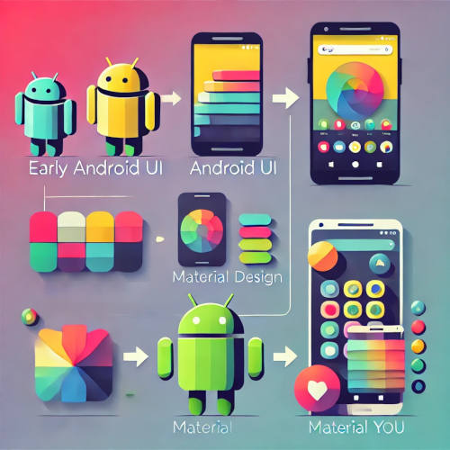

A Evolução das Interfaces do Android: Da Simplicidade ao Sofisticado
Os Primeiros Passos: A Era da Simplicidade
Quando o Android foi lançado em 2008 com a versão 1.0, sua interface era básica, funcional e sem grandes elementos visuais. Inspirado no design de sistemas como o Windows Mobile e o Symbian, ele priorizava a acessibilidade e o desempenho em um mundo onde as telas sensíveis ao toque ainda estavam se consolidando. Sem uma identidade visual marcante, os primeiros layouts tinham cores neutras, ícones simples e poucos efeitos gráficos, mas já traziam recursos inovadores, como widgets e uma gaveta de aplicativos.
A Revolução do Material Design
Com o lançamento do Android 5.0 Lollipop em 2014, o Google apresentou o Material Design, uma abordagem que transformou completamente a experiência do usuário. Essa filosofia visual trouxe camadas, sombras, animações suaves e cores vibrantes, criando uma interação mais fluida e intuitiva. O sistema passou a ter um visual mais unificado, com regras de design que padronizaram aplicativos e melhoraram a consistência entre diferentes dispositivos. Foi um marco que modernizou a interface e consolidou a identidade visual do Android.
O Presente e o Futuro: Personalização e Inteligência
Atualmente, com a chegada do Material You no Android 12, o sistema passou a se adaptar ainda mais ao usuário. Agora, as cores do tema podem ser extraídas automaticamente do papel de parede, e os ícones e widgets ganham um toque personalizado. Além disso, a interface está cada vez mais integrada à inteligência artificial, permitindo ajustes dinâmicos conforme o uso do dispositivo. Essa evolução mostra como o Android saiu de um design simples e funcional para um sistema altamente personalizável, que combina estética e praticidade sem perder sua essência inovadora.
Então é isso! Espero que você tenha gostado do nosso artigo com essa curiosidade sobre o sistema Android.